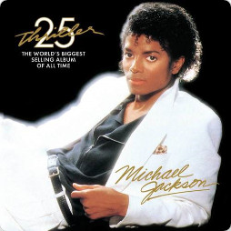

Billiejean
30/11/1982
Michael Jackson
Click To Hear
According to Jackson's biographer J. Randy Taraborrelli, "Billie Jean" was inspired by letters Jackson
received in 1981 from a woman claiming he was the father of one of her twins. Jackson, who regularly
received letters of this kind, had never met the woman and ignored those claims.
REVIEWS
Billie jean is the peak of Jackson’s many collaborations with Quincy Jones, “Billie Jean” is a song
in which every single element is in its right place. The crisp beat, pulsing bass, and dramatic
strings provide a perfect backdrop for one of Jackson’s greatest vocal performances.
RATE
9/10